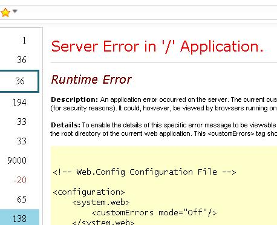

Depending on your browser settings you may not be able to view pages in Initiative Tracker that require a login (such as the D&D compendium). This is related to a browser security issue called "3rd party cookies". You are required to log on to the secure page (since Initiative Tracker just shows pages that you have a valid right to be at) but your browser prevents you because its worried about the remote page creating a 3rd party coookie. If you are experiencing this issue, then your browser is configured to reject 3rd party cookies. Which is generally a good thing. Fortunately most browsers have a mechanism to allow 3rd party cookies from specific sites.
The easiest way to get around this issue is to just enable 3rd party cookies. However, that is not reccomended, because it would allow data mining advertising companies to potentially track your progress across the web. Instead you should just allow cookies from specific sites you intend to use with Initiative Tracker.
"I just came back to the site and my data is gone!"
On June 29, 2009 the way the application stores data changed slightly. A small subset of users will not be able to access their data with the new version. The new version cannot access your data because of security restrictions. You can however continue to use the old version which can read your data. You can find it at:
http://www.initiativetracker.com/recovery
At some point in the future I plan to implement an utility to import/export data, at which point you should be able to export your data from the recovery page and import it into the main page.
If the link provided does not help then this is a serious bug please Report It.
"I added a page and now whenever I start InitiativeTracker, once its finished loading it switches to that page."
This can happen if a page has automatic code to break itself out of other sites that contain it. Sites sometimes do this to prevent other sites from including their content and passing it off as their own. If you add such a site, as soon as Initiative Tracker loads it, it will force your browser to its own site.
In the future I would like to detect this behaviour and prevent it somehow, but in the meantime there is something you can do if this happens to you.